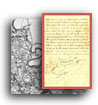

Report of 12th of March that the evacuation of Fort Sumter had been ordered-a fraud & deception to influence Va.
Legislature declared that any attempt to coerce the Seceded States will be resisted by Va. with all her power 2nd That Va's interests & sympathies are with the Southern Slave holding States-- High Tariff--driving her commerce to Southern [illegible] Unlawful siezure of the Annapolis & Washington R.R. Disregard of the protest of Md. against Marching troops through her borders. Object of Lincoln-- We stand where our fathers stood on the 6th of May 1776 when they determined no longer to submit to the grievances under which they labored--no alternative but submission or separation--Appealed to the Searcher of hearts for the sincerity of their former declarations Test Oaths Senate refused a collector
Bruce
We are despised abroad from the teachings of the Abolitionist We can secure respect by deserving it The question of Slavery is not one of dollars & cts. It has grown up with us, was brought here only 20 yrs after the white race--[illegible] intertwined with every portion of society & political death must come from severing it. Encroachments from the North will end, for they are not tolerated in civilized times. Liberty seeks no protection, but protects itself.
Inferiority of Va. must come from
Tariffs for the North & bounties. People can only be [illegible] through their revenue laws.
|
Return to the Hotchkiss Family Collection